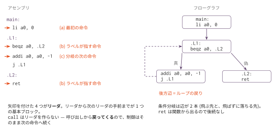

基本ブロックとフローグラフ — 最適化の地図を作る
今日のゴール
アセンブリを基本ブロックに切り分け、制御の流れを辺で結んでフローグラフを作る。 Graphviz で図にして、自分のコンパイラが出したコードの形を目で確かめる。
この回の位置づけ
| 項目 | 内容 |
|---|---|
| 必須の前提 | コマ15（完成した final/mycc.py）、O1（golden.py が O1_measure/bench/ の5本を対象にする） |
| 推奨の前提 | — |
| 改変しない | mycc.py、scaffold/、optcc.py |
| 編集する | cfg.py |
| 完了条件 | check.py の全 Step が PASS になり、golden.py が bench/*.c のフローグラフを検証して図を書き出す |
| コマ数 | 1 |
| 備考 | 最適化発展シリーズの第2回。この回だけは命令数が減らない（道具を作る回である）。作ったフローグラフを O5・O6・O7 が使う |
作ったフローグラフを、以降の回がそのまま使う。
| 回 | 何に使うか |
|---|---|
| O5 | 生存変数解析（ブロックとブロックの間で情報を伝える） |
| O6 | コピー伝播・死コード除去 |
| O7 | ブロック整列とループ回転（後方辺を探す） |
なぜ「ブロック」が要るのか
O3（命令選択）の is_dead_after で、こういう妥協をした。
| 見つけたもの | 判定 |
|---|---|
reg を読む命令 |
まだ使われている → 畳めない |
reg に書く命令 |
読まれる前に上書きされた → 畳んでよい |
ラベル・分岐・call |
ここで基本ブロックが終わる → 判断できない |
is_dead_after は前向きに1行ずつ見るだけなので、ラベルに出会うと止まる。
ラベルの先は別の経路から飛んでくるかもしれないので、
単純な走査では「このレジスタが後で使われるか」を答えられない。
答えるには、「どこからどこへ制御が移りうるか」の地図が要る。それがフローグラフである。
基本ブロックとは
途中から入らず、途中から出ない命令の並びのこと。 先頭に入ったら、必ず最後まで実行される。
だからブロックの中では「上から順に1回ずつ実行される」と考えてよい。 考えるべき経路が減るので、解析がぐっと簡単になる。
リーダを見つける
ブロックの先頭になる命令をリーダという。規則は3つだけである。
| 規則 | いまの出力での例 |
|---|---|
| （a） 最初の命令 | 関数の先頭 |
| （b） ラベルが指す命令 | .L2: の次（どこかから飛んでくる） |
（c） 分岐・ジャンプ・ret の次の命令 |
beqz a0, .L4 の次 |

call はリーダを作らない。
呼び出しは戻ってくるので、制御はそのまま次の命令へ続く。
だからブロックを切る必要がない。
ただし call はレジスタを壊す（a0–a7, ra, t0–t6）。
これは O5 の生存解析で効いてくる別の話である。
辺を張る
各ブロックの最後の命令だけを見れば、次に何が起きるかが決まる。
| 最後の命令 | 後続 |
|---|---|
ret |
なし（関数から出る） |
j L |
L のブロックだけ |
beqz rX, L などの条件分岐 |
L のブロックと、次のブロックの2つ |
| それ以外 | 次のブロック（次がリーダだったので切れただけ） |
条件分岐で辺が2本になるところが要点である。 プログラムの「分かれ道」が、そのままグラフの分岐になる。
後方辺 — ループの正体
自分より前のブロックへ戻る辺を後方辺という。これがループである。
.L2: 条件 ← ここへ戻ってくる
beqz a0, .L4
本体
.L3: 更新
j .L2 ← 後方辺
.L4:グラフの上では、.L3 のブロックから .L2 のブロックへ戻る辺として現れる。
ループを「ソースコードの while」ではなく「グラフの後方辺」として見つけられることが、
この回のいちばんの収穫である。O7 のループ回転は、ここを狙う。
実装
| Step | 実装対象 | 内容 |
|---|---|---|
| 1 | find_leaders |
上の3つの規則 |
| 2 | build_blocks |
リーダの位置で切る |
| 3 | build_edges |
最後の命令を見て後続を決める |
Block クラス、前処理の strip_asm（命令だけ取り出してラベルの飛び先を表にする）、
to_dot（Graphviz 出力）はスケルトンで用意してある。
python3 ../optcc.py --passes '' ../O1_measure/bench/loop_sum.c # 素の出力を見る
python3 golden.py # 図を書き出すテスト
python3 check.py # リーダ・ブロック・辺の単体テスト(未実装は SKIP)
python3 golden.py # bench/*.c のフローグラフを検証して図にするgolden.py は数を数えるだけでなく、構造の辻褄も確かめる。
「ret に後続がある」「条件分岐の辺が1本しかない」といった間違いは、ここで落ちる。
測ってみると
教員の実装ではこうなる（最適化なしの出力に対して）。
ベンチマーク 関数 ブロック 辺 後方辺 最大ブロック
bubble 1 14 17 3 76
fib_rec 2 6 5 0 34
loop_sum 1 6 6 1 18
matmul 1 20 24 5 106
strops 3 18 19 3 36
合計 64 71 12fib_rec だけ後方辺が0である。ループを1つも使っておらず、再帰だけで書かれているからである。
O7 のループ回転が fib_rec に効かないのは、この時点で予言できる。
matmul の最大ブロックは 106命令もある。3重ループの本体が
1本道だからで、この中には分岐が1つも無い。
「ブロックの中は素直」という感覚をつかんでおくとよい。
発展課題
callでブロックを切ってみる: 切ると何が変わるか。ブロック数はどれだけ増えるか。 なぜ普通は切らないのか- 到達しないブロックを探す: 入口から辿れないブロックがあれば、それは死んだコードである。 いまのコンパイラは出すか
- 支配関係（dominator）: 「B に行くには必ず A を通る」という関係を計算する。 これがあると後方辺を正確に定義できる（いまは「前へ戻る辺」で近似している）
- ループの入れ子を数える:
matmulの3重ループは、後方辺の包含関係として見える。 最も内側のループはどれか - 関数ごとに切り出す:
blocks_of(blocks, func)を使って、関数単位で図を出す
コラム: 地図が無いと最適化は臆病になる。
O3 の is_dead_after は、ラベルを見つけると「分からない」と答えて畳み込みをあきらめた。
安全ではあるが、機会を逃している。
フローグラフがあれば「そのラベルへ飛んでくるのはどのブロックか」が分かるので、
もっと正確に答えられる。
もっとも、正確にすれば必ず得をする、とは限らない。 O3 の畳み込みが正確な解析でどれだけ増えるかは、O6 の 「正確な解析は畳み込みを増やすか」で実際に数える （答えは 0箇所である）。 最適化の議論は、いつも「測ってみると」から始まる。